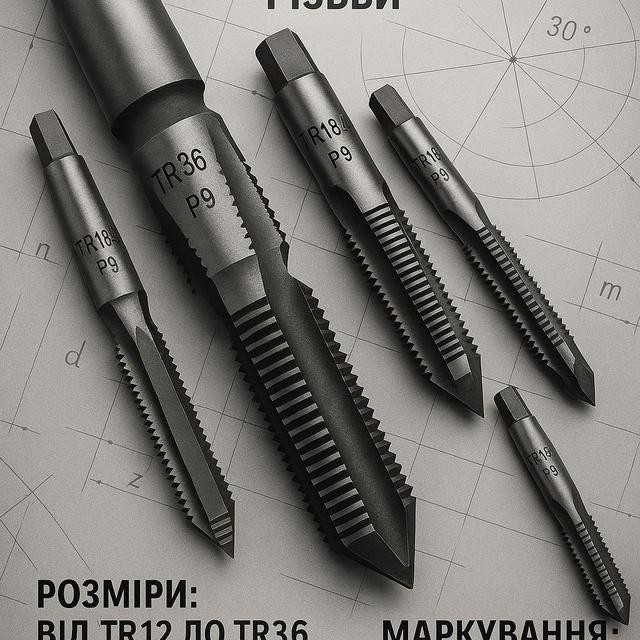

Мітчики трапеція та іншіМетчики трапеция и др
Мітчик W 33.5 (11 ниток на дюйм ) вик.1 через крок 120х60Метчик W 33.5 (11 ниток на дюйм ) исп.1 через шаг 120х60
3600 UAH
без ПДВбез НДС
НаявністьНаличие: 5 шт.
КодКод: FLK-02442
ОписОписание
Мітчик W 33.5 (11 ниток на дюйм ) вик.1 через крок 120х60 — професійний металорізальний інструмент для нарізання внутрішньої метричної різьби в отворах. Основні параметри: різьба W 33.5. В наявності 5 шт. на складі у Харкові. Ціна 3600 грн без ПДВ. Опт і роздріб, відправлення по всій Україні. Замовлення від 2 000 грн.Метчик W 33.5 (11 ниток на дюйм ) исп.1 через шаг 120х60 — профессиональный металлорежущий инструмент для нарезания внутренней метрической резьбы в отверстиях. Основные параметры: резьба W 33.5. В наличии 5 шт. на складе в Харькове. Цена 3600 грн без НДС. Опт и розница, отправка по всей Украине. Заказ от 2 000 грн.
ХарактеристикиХарактеристики
| Тип інструментуТип инструмента | МітчикМетчик |
|---|---|
| КатегоріяКатегория | Мітчики трапеція та іншіМетчики трапеция и др |
| РізьбаРезьба | W 33.5W 33.5 |
| Ниток на дюймНиток на дюйм | 1111 |
| Напрямок різьбиНаправление резьбы | праваправая |
| ВиконанняИсполнение | 11 |
| СтанСостояние | новийновый |
| Код товаруКод товара | FLK-02442FLK-02442 |
| НаявністьНаличие | 5 шт.5 шт. |